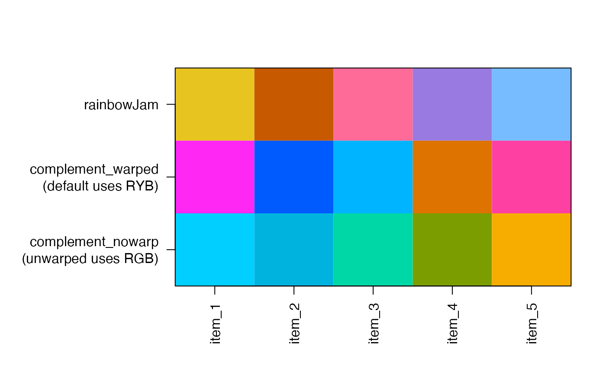
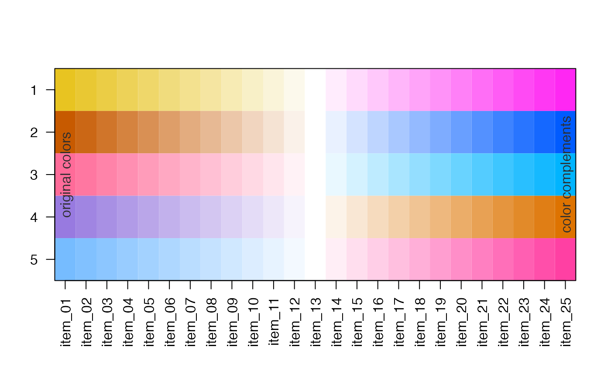
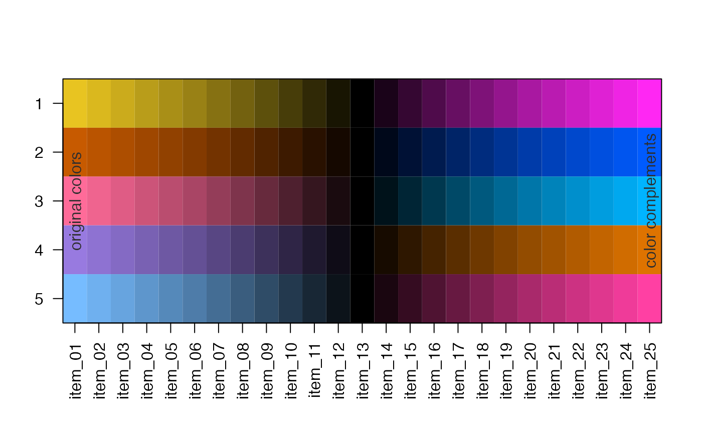

Create color complement by rotating the color hue
color_complement( color, Hflip = 180, Cfloor = 160, Lrange = c(0, 100), useWarpHue = TRUE, ... )
| color |
|
|---|---|
| Hflip | numeric value in degrees (from 0 to 360) added to the color hue to produce the final color hue. |
| Cfloor | numeric value used to limit output chroma |
| Lrange |
|
| useWarpHue |
|
| ... | additional arguments are ignored. |
This function rotates the color hue to create a complementary
color for each color input. It differs from standard methods
by using warped color hue by default (useWarpHue=TRUE), which
uses a red-yellow-blue color wheel instead of R default
red-green-blue. It also imposes a minimum chroma, which
ensures the output color is reasonably high in color
saturation.
Other jam utility functions:
get_nmat_ceiling(),
get_numeric_transform(),
rowNormScale()
n <- 5; rc <- colorjam::rainbowJam(n); rc_comp <- color_complement(rc, Cfloor=180); rc_comp2 <- color_complement(rc, Cfloor=180, useWarpHue=FALSE); jamba::showColors(list(rainbowJam=rc, `complement_warped\n(default uses RYB)`=rc_comp, `complement_nowarp\n(unwarped uses RGB)`=rc_comp2));## divergent color gradients through white ## hint: use higher lens value to make middle colors more intense rc_ramps <- lapply(jamba::nameVector(seq_along(rc)), function(i){ j <- jamba::getColorRamp(c(rc[i], "white", rc_comp[i]), n=25, lens=0, divergent=TRUE); names(j) <- ""; names(j)[1] <- "original colors"; names(j)[25] <- "color complements"; j; }); jamba::showColors(rc_ramps, groupCellnotes=TRUE, groupByColors=FALSE);## divergent color gradients through white ## hint: use higher lens value to make middle colors more intense rc_ramps2 <- lapply(jamba::nameVector(seq_along(rc)), function(i){ j <- jamba::getColorRamp(c(rc[i], "black", rc_comp[i]), n=25, lens=1, divergent=TRUE); names(j) <- ""; names(j)[1] <- "original colors"; names(j)[25] <- "color complements"; j; }); jamba::showColors(rc_ramps2, groupCellnotes=TRUE, groupByColors=FALSE);